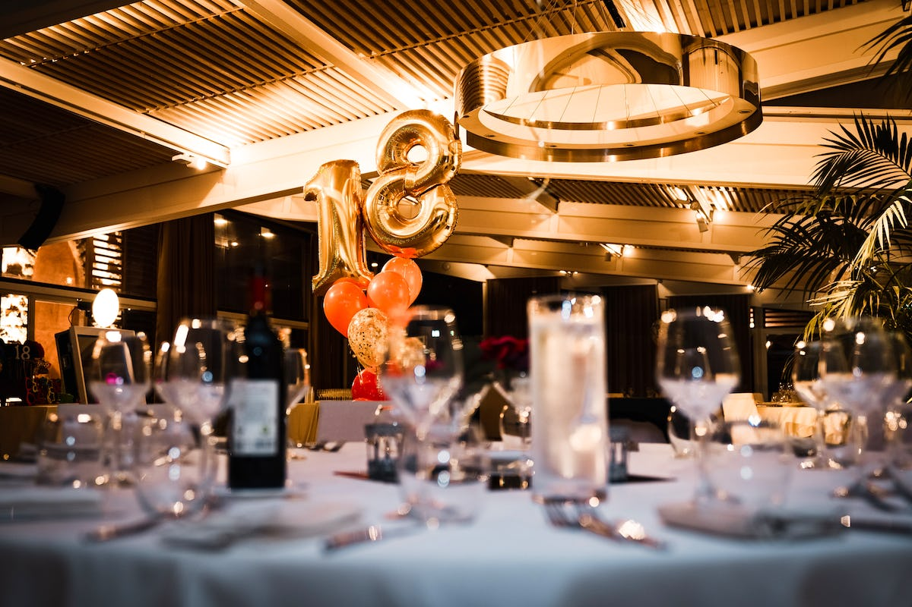
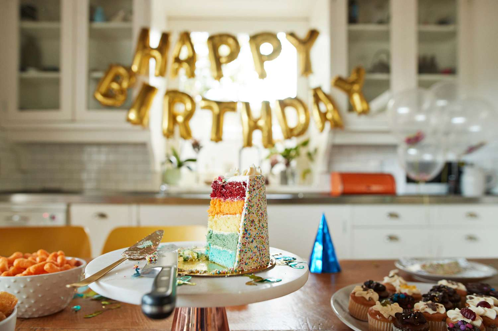

Party Guide
Организация в уют и спокойствие
Остави нещата да се случват
Организация в уют и спокойствие
Остави нещата да се случват
Party Guide се грижи за твоят специален ден
|
Ресторанти/Зали
 |
Ресторантът играе важна роля при празнуването на рождения ден на човек, предоставяйки уникална и пълноценна гастрономска и социална обстановка. Първо и най-важно, изборът на подходящ ресторант може да направи рождения ден особено специален, предлагайки разнообразие от вкусове и кулинарни изживявания. Също така, ресторантът предоставя удобство и комфорт, освобождавайки рожденика и гостите му от грижи за приготвянето на храна и обслужването. Освен това, атмосферата на ресторанта създава подходящ фон за празнуване и общуване, позволявайки на гостите да се насладят на момента без стреса от организацията. Ресторантите често предлагат персонализирани услуги, като украса, торта и специално избрани ястия, които правят събитието още по-индивидуално и незабравимо. За много хора ресторантът става мястото за събиране на приятели и семейство, което подчертава социалната важност на рождения ден. В крайна сметка, ресторантът предоставя цялостно решение за празнуването, като съчетава вкус, уют и празнично настроение, което прави рождения ден на човек изключително специален и запомнящ се момент. |
|
Храна/Торти/Кетеринг
 |
Храната е ключов аспект от рождения ден, който допринася за усещането на радост и наслаждение. Предоставянето на вкусни и внимателно подбрани ястия не само задоволява вкусовете на гостите, но и създава приятна атмосфера за празнуване. Когато става въпрос за кетъринг, има редица ползи, включително удобството за организатора и качественото обслужване на гостите, което освобождава от стреса на готвенето и сервирането. Кетърингът предоставя възможност за персонализация на менюто според предпочитанията и изискванията на рожденика, като същевременно предлага разнообразие от кулинарни изкушения. Този избор е особено удобен и за по-големи групи гости, където желанието за разнообразие и индивидуално внимание е важно. Тортата, като символ на рождения ден, носи със себе си традиционния дух на празника и предизвиква емоции. Независимо от това дали е кетъринг или самостоятелно готвене, тортата представлява връхната точка на торжеството. Специално изработена торта добавя уникалност и замърсяваща визия, която става фокусен център и приноси радост и вълнение към рождения ден. |
|
Украса/Покани/Цветя/Картички

|
Декорацията на рожден ден е ключов елемент, който не само създава визуална атмосфера, но и изразява индивидуалността на празнуващия. Специално подбраните декорации, като цветове, банери и тематични акценти, могат да трансформират обичайно пространство в уютна и радостна среда. Декорацията подчертава темата на събитието и пренася гостите в свят на вълнение и празнуване. |
|
Озвучение/Водещ/Програма

|
Хубавият DJ е неотделима част от успешното рождено ден парти, предоставяйки забавление и вълнение чрез музикалната селекция. Професионален DJ не само поддържа енергията на събитието чрез правилно подбрани песни, но и създава динамична атмосфера, подпомагайки гостите да се забавляват и танцуват. Той е важен за създаването на перфектната музикална платформа, която подчертава настроението и емоциите на рождения ден. В комбинация със специалната декорация, хубавият DJ става ключов играч в създаването на незабравимо събитие. |